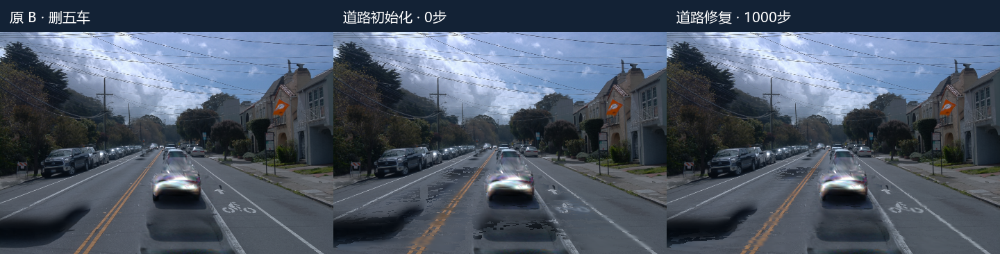
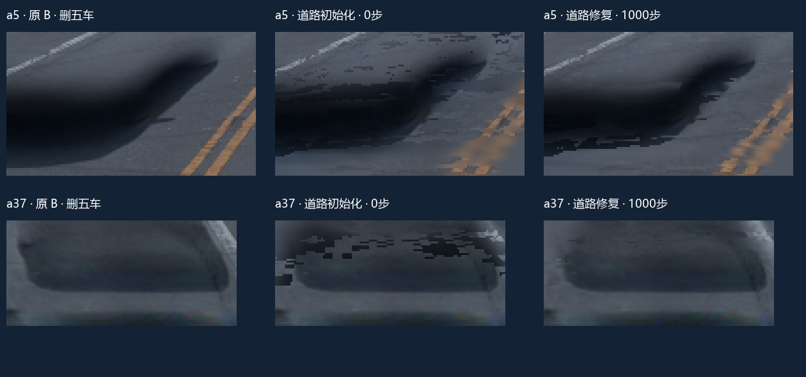
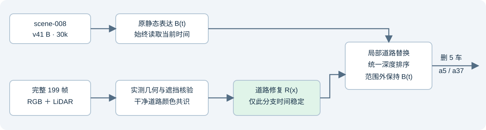

scene-008 · a5 / a37 道路修复 1k
2026-11-03 · v41 B 30k · 全199帧道路证据 · 删五车
1,000 步已完成，smoke / 恢复重放均为 0。有效参考域的误差下降，两处大块残影仍然可见；本轮不能认定已完成去影。人工 verdict 保持空，quality_accepted=false。
同一 raw105：原 B、0步初始化与1k


三列均删同样五车，使用同一相机与时刻。放大框是用户关注区域的诊断窗口，未当作真实阴影分割标签。残留黑块可能包含原静态车形外观。
固定参考域的量化结果
| 对象 | 阴影 MAE · 原 B | 阴影 MAE · 1k | 下降 | 有效分母 | 道路 MAE · 原 B → 1k |
|---|
| a5 | 0.08083 | 0.04847 | 40.0% | 18/49 · 3,712 像素样本 | 0.02895 → 0.02294 |
| a37 | 0.07945 | 0.06099 | 23.2% | 49/49 · 20,813 像素样本 | 0.02941 → 0.02522 |
口径：合格阴影代理域、线性RGB、逐像素加权。a5只有18帧有有效阴影参考，空域不算0；a37为49帧。全部199帧都参与BUILD，49帧也参与相机采样，不能宣称未见帧泛化。该域不覆盖所有肉眼可见残影。
| 对象 | 最差帧 | 最差阴影 MAE | 改善帧 / 有效帧 | 暗残留比例* |
|---|
| a5 | raw96 | 0.08988 | 16 / 18 | 82.1% → 44.6% |
| a37 | raw137 | 0.08027 | 49 / 49 | 83.3% → 58.7% |
* 合格阴影域内，相对参考平均线性RGB暗差超过0.06的像素比例。帧等权阴影MAE：a5 0.07348 → 0.04527；a37 0.06776 → 0.03910。汇总原值 · 完整逐帧原值
完整49帧同步查看
原 B · 删五车 道路修复1k · 删五车
道路修复1k · 删五车
视频左侧原 B，右侧1k，同步49帧、原生10Hz。
两类限制已被直接观察到
部分关键像素没有进入修复输出。raw105 的 (90,255) 有合格参考，但被边界路由排除，最终RGB逐值等于原 B；(255,300) 没有合格参考且独立道路alpha为0，也返回原 B。训练道路颜色无法改变这些被排除的像素。
已启用道路也受到原静态表达遮挡。raw105 的 a37 关注窗口内，1,565个修复内部像素的道路独立alpha均值0.922，联合渲染实际道路贡献均值只有0.283；其中300像素独立alpha≥0.5、联合贡献<0.05。这证明合成可见性仍受限，不能据此给旧高斯赋予车辆或道路的归属真值。
因此，本轮证据支持“恢复参考与稳定时间分支能改善一部分道路”，也显示资格路由、未知区域和原静态遮挡仍限制目标残影消除。没有追加训练或扩大方法。三锚零更新贡献审计
时间约束与执行验收

固定 raw105 相机，切换到 raw89/105/137 的时间：道路修复分支最大RGB差均为0；原静态全图相对首时刻的MAE为0 / 0.03307 / 0.04006。因此整条原静态分支没有冻结到某一帧。修复域外与当前时刻原 B 的最大误差为0。
正式训练 236.9 秒，日志恰好1,000条更新；保存的Adam步数均为1,000。无smoke、无恢复重放；三个锚帧从保存checkpoint独立进程重载后的PNG逐字节一致。原 B 四份权重校验保持不变。主运行NVML显存峰值 14.14 GiB，训练CUDA分配器峰值 4.29 GiB / 保留 6.96 GiB。
时间核验 · 实际执行账 · 1000步loss · 道路修复checkpoint · 主运行收据
复查与恢复
实验单与原始输入覆盖 · 当前合同 · 取消smoke前合同 · 入口源码 · 完整新实验快照约239MiB已在用户本地及远端保留
快照包含新道路参考、全部49帧资格图、checkpoint、逐帧结果、代码与日志。回放仍依赖原 B30k 四份权重和原V3坐标bundle，远端原件保持保留。
/root/autodl-tmp/drivingeditor_repro/campaign/shadow_a5_a37_199_20261103
failure_ledger_refs=[V82-F01,V82-F06]；failure_ledger_delta=none。独立阴影层未加入；没有纠正或重新训练原 B 的对象归属。